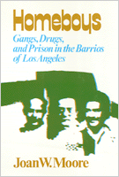

<body bgcolor="#FFFFFF" text="#000000" link="#0000FF" vlink="#CC0000" alink="#CC0000"><center><hr width="350" size="1" align="center" noshade>A groundbreaking study examines gang activities in East Los Angeles<hr width="350" size="1" align="center" noshade><p><a href="https://cdcshoppingcart.uchicago.edu/Cart/ChicagoBook.aspx?ISBN=9780877221210&&PRESS=temple" target="_top">Buy this book!</a> | <a href="https://cdcshoppingcart.uchicago.edu/Cart/Cart.aspx?PRESS=temple" target="_top">View Cart</a> | <a href="https://cdcshoppingcart.uchicago.edu/Cart/Cart.aspx?PRESS=temple" target="_top">Check Out</a></p><p></p></center><!--none//--><h1>Homeboys</h1>
<H2>Gangs, Drugs, and the Prison in the Barrios of Los Angeles</H2>
<h3>Joan W. Moore</h3>
<P>cloth 0-87722-121-9 $29.95, <FONT COLOR=#990033>Out of Print</FONT>
<br>paper 0-87722-114-6 $23.95, Feb 80, <FONT COLOR=#990033>Out of Stock Unavailable</FONT>
<BR> 240 pp
3&nbsp;map(s)
</P><h3 align="center"><P><font color="#996633">Winner of the Sidney Spivack Award,
1980</font></P>
</H3>
<p>Moore's groundbreaking study examines gang activities in East Los Angeles.
<BR>&nbsp;<h2>Excerpt</h2><P>Excerpt available at <a href="http://www.temple.edu/tempress">www.temple.edu/tempress</a></p>
<BR>&nbsp;<H2>About the Author(s)</H2>
<P><b>Joan W. Moore</b> is Professor at the University of Wisconsin, Milwaukee. She is the author of <i>Mexican Americans</i> and co-author (with Leo Grebler) of <i>The Mexican American People</i>.</P>
<BR><H2>Subject Categories</H2>
<p><A HREF="/tempress/race.html" TARGET="_top">Race and Ethnicity</a>
<BR><A HREF="/tempress/sociology.html" TARGET="_top">Sociology</a>
</p>
<p align="center"><a href="https://cdcshoppingcart.uchicago.edu/Cart/ChicagoBook.aspx?ISBN=9780877221210&&PRESS=temple" target="_top">Buy this book!</a> | <a href="https://cdcshoppingcart.uchicago.edu/Cart/Cart.aspx?PRESS=temple" target="_top">View Cart</a> | <a href="https://cdcshoppingcart.uchicago.edu/Cart/Cart.aspx?PRESS=temple" target="_top">Check Out</a></p><p><font face="Arial" size="1"><a href="copyright.html" onMouseOver="window.status='Web Copyright Policy';return true;" onMouseOut="window.status=''" title="Web Copyright Policy">&copy;</a> 2015 <a href="http://www.temple.edu" target="new" onMouseOver="window.status='Link to Temple University home page';return true;" onMouseOut="window.status=''" title="Link to Temple University home page">Temple University</a>. All Rights Reserved. http://www.temple.edu/tempress/titles/161_reg.html</font></p>